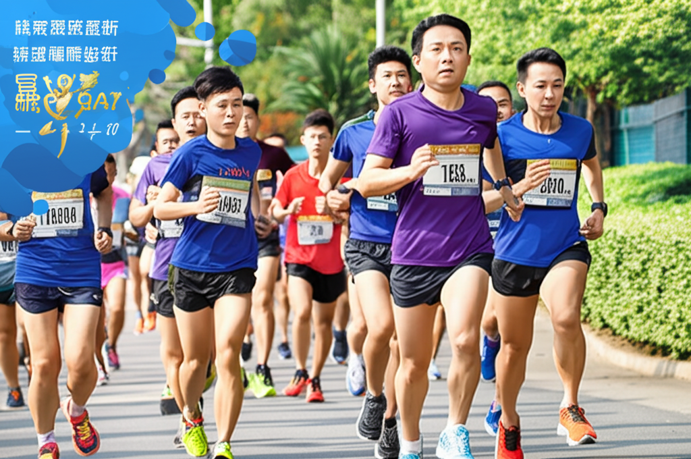

# 超慢跑運動風潮席捲台中：建商推廣，全民響應
超慢跑近年來蔚為風潮，不僅成為許多人的運動新選擇，更在台中掀起一股熱潮。建商積極投入，舉辦大型超慢跑活動，加上媒體報導推波助瀾，吸引眾多民眾參與，形成一股全民運動風氣。
## 主體內容
### 第一點：建商積極推廣，打造健康社區
富比士地產王報導指出，「1518市政核心超慢跑」是國內少數專為超慢跑而辦的大型活動，且已連續舉辦兩年。此活動由建商與健身運動企業共同合作，旨在推廣全齡友善的運動風氣。從報導中可見，建商不僅蓋房子，更致力於打造健康的生活環境，將運動融入社區生活。聯合新聞網也提到，雙橡園打造超慢跑盛事，將七期市政核心轉化為健康運動場域，可見建商在推廣超慢跑運動上的用心與投入。
### 第二點：奢華補給成亮點，吸引民眾參與
非凡電視報導了一場補給超奢華的超慢跑活動，現場提供頂級海鮮、烤山豬等豐盛美食，吸引近4千人參與，人數較去年翻倍。台視新聞網也報導了這場「超慢跑」奢華補給站，顯示豐富的補給品是吸引民眾參與的重要因素之一。透過提供美食，讓運動不再枯燥乏味，反而成為一場兼具健康與美食的饗宴。
### 第三點：超慢跑適合各年齡層，促進全民健康
PChome Online新聞指出，根據衛福部資料顯示，台灣即將邁入超高齡社會，而超慢跑是一種適合各年齡層的運動方式。 WaCare遠距健康也將超慢跑列為推薦運動，強調其簡單易行的特點。這些資訊都顯示，超慢跑不僅僅是一種運動潮流，更是一種促進全民健康的有效方式，尤其適合長者及缺乏運動習慣的人。
## 結論
台中超慢跑運動的興起，除了建商的積極推廣和媒體的廣泛報導外，更重要的是其運動本身的低門檻和高效益。它不僅適合各年齡層，且易於上手，能有效提升心肺功能和身體素質。相信在各方共同努力下，超慢跑將持續在台中乃至全台灣發光發熱，成為全民運動的新選擇。